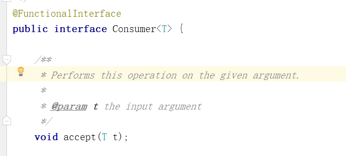
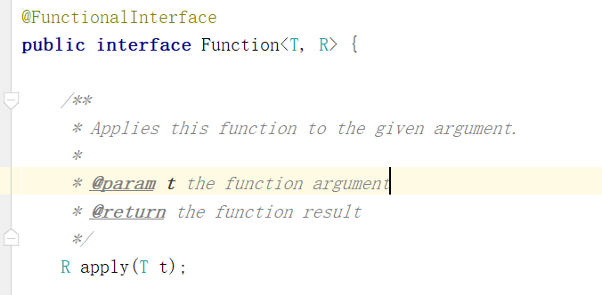

函数式编程-Stream流
Author：Zhry
Version：0.0.1
Date：2022年9月20日08:53:07
函数式编程-Stream流1. 概述1.1 为什么学？1.2 函数式编程思想1.2.1 概念1.2.2 优点2. Lambda表达式2.1 概述2.2 核心原则2.3 基本格式2.3.1 例一2.3.2 例二2.3.3 例三2.3.4例四2.3.5 例五2.4 省略规则3. Stream流3.1 概述3.2 案例数据准备3.3 快速入门3.3.1 需求3.3.2 实现3.4 常用操作3.4.1 创建流3.4.2 中间操作3.4.2.1 filter3.4.2.2 map3.4.2.3 distinct3.4.2.4 sorted3.4.2.5 limit 3.4.2.6 skip3.4.2.7 flatMap3.4.3 终结操作3.4.3.1 forEach3.4.3.2 count3.4.3.3 max&min3.4.3.4 collect3.4.3.5 查找与匹配3.4.3.5.1 anyMatch3.4.3.5.2 allMatch3.4.3.5.3 noneMatch3.4.3.5.4 findAny3.4.3.5.5 findFirst3.4.3.6 reduce归并3.5 注意事项4. Optional4.1 概述4.2 使用4.2.1 创建对象4.2.2 安全消费值4.2.3 获取值4.2.4 安全获取值4.2.5 过滤4.2.6 判断4.2.7 数据转换5. 函数式接口5.1 概述5.2 常见函数式接口 5.3 常用的默认方法6. 方法引用6.1 推荐用法6.2 基本格式6.3 语法详解(了解)6.3.1 引用类的静态方法6.3.1.1 格式6.3.1.2 使用前提6.3.2 引用对象的实例方法6.3.2.1 格式6.3.2.2 使用前提6.3.3 引用类的实例方法6.3.3.1 格式6.3.3.2 使用前提6.3.4 构造器引用6.3.4.1 格式6.3.4.2 使用前提7. 高级用法7.1 基本数据类型优化7.2 并行流8. 后会有期
1. 概述
1.1 为什么学？
- 能够看懂公司里的代码
- 大数量下处理集合效率高
- 代码可读性高
- 消灭嵌套地狱
//查询未成年作家的评分在70以上的书籍 由于洋流影响所以作家和书籍可能出现重复，需要进行去重List<Book> bookList = new ArrayList<>();Set<Book> uniqueBookValues = new HashSet<>();Set<Author> uniqueAuthorValues = new HashSet<>();for (Author author : authors) { if (uniqueAuthorValues.add(author)) { if (author.getAge() < 18) { List<Book> books = author.getBooks(); for (Book book : books) { if (book.getScore() > 70) { if (uniqueBookValues.add(book)) { bookList.add(book); } } } } }}System.out.println(bookList);xxxxxxxxxxList<Book> collect = authors.stream() .distinct() .filter(author -> author.getAge() < 18) .map(author -> author.getBooks()) .flatMap(Collection::stream) .filter(book -> book.getScore() > 70) .distinct() .collect(Collectors.toList());System.out.println(collect);1.2 函数式编程思想
1.2.1 概念
面向对象思想需要关注用什么对象完成什么事情。而函数式编程思想就类似于我们数学中的函数。它主要关注的是对数据进行了什么操作。
1.2.2 优点
- 代码简洁，开发快速
- 接近自然语言，易于理解
- 易于"并发编程"
2. Lambda表达式
2.1 概述
Lambda是JDK8中一个语法糖。他可以对某些匿名内部类的写法进行简化。它是函数式编程思想的一个重要体现。让我们不用关注是什么对象。而是更关注我们对数据进行了什么操作。
2.2 核心原则
可推导可省略
2.3 基本格式
xxxxxxxxxx(参数列表)->{代码}2.3.1 例一
我们在创建线程并启动时可以使用匿名内部类的写法：
xxxxxxxxxxnew Thread(new Runnable() { public void run() { System.out.println("你知道吗 我比你想象的 更想在你身边"); }}).start();可以使用Lambda的格式对其进行修改。修改后如下：
xxxxxxxxxxnew Thread(()->{ System.out.println("你知道吗 我比你想象的 更想在你身边");}).start();2.3.2 例二
现有方法定义如下，其中IntBinaryOperator是一个接口。先使用匿名内部类的写法调用该方法。
x public static int calculateNum(IntBinaryOperator operator){ int a = 10; int b = 20; return operator.applyAsInt(a, b); } public static void main(String[] args) { int i = calculateNum(new IntBinaryOperator() { public int applyAsInt(int left, int right) { return left + right; } }); System.out.println(i); }Lambda写法：
xxxxxxxxxx public static void main(String[] args) { int i = calculateNum((int left, int right)->{ return left + right; }); System.out.println(i); }2.3.3 例三
现有方法定义如下，其中IntPredicate是一个接口。先使用匿名内部类的写法调用该方法。
xxxxxxxxxx public static void printNum(IntPredicate predicate){ int[] arr = {1,2,3,4,5,6,7,8,9,10}; for (int i : arr) { if(predicate.test(i)){ System.out.println(i); } } } public static void main(String[] args) { printNum(new IntPredicate() { public boolean test(int value) { return value%2==0; } }); }Lambda写法：
public static void main(String[] args) {
printNum((int value)-> {
return value%2==0;
});
}
public static void printNum(IntPredicate predicate){
int[] arr = {1,2,3,4,5,6,7,8,9,10};
for (int i : arr) {
if(predicate.test(i)){
System.out.println(i);
}
}
}
2.3.4例四
现有方法定义如下，其中Function是一个接口。先使用匿名内部类的写法调用该方法。
public static <R> R typeConver(Function<String,R> function){
String str = "1235";
R result = function.apply(str);
return result;
}
public static void main(String[] args) {
Integer result = typeConver(new Function<String, Integer>() {
@Override
public Integer apply(String s) {
return Integer.valueOf(s);
}
});
System.out.println(result);
}
Lambda写法：
Integer result = typeConver((String s)->{
return Integer.valueOf(s);
});
System.out.println(result);
2.3.5 例五
现有方法定义如下，其中IntConsumer是一个接口。先使用匿名内部类的写法调用该方法。
public static void foreachArr(IntConsumer consumer){
int[] arr = {1,2,3,4,5,6,7,8,9,10};
for (int i : arr) {
consumer.accept(i);
}
}
public static void main(String[] args) {
foreachArr(new IntConsumer() {
@Override
public void accept(int value) {
System.out.println(value);
}
});
}
Lambda写法：
public static void main(String[] args) {
foreachArr((int value)->{
System.out.println(value);
});
}
2.4 省略规则
- 参数类型可以省略
- 方法体只有一句代码时大括号return和唯一一句代码的分号可以省略
- 方法只有一个参数时小括号可以省略
- 以上这些规则都记不住也可以省略不记
3. Stream流
3.1 概述
Java8的Stream使用的是函数式编程模式，如同它的名字一样，它可以被用来对集合或数组进行链状流式的操作。可以更方便的让我们对集合或数组操作。
3.2 案例数据准备
<dependencies>
<dependency>
<groupId>org.projectlombok</groupId>
<artifactId>lombok</artifactId>
<version>1.18.16</version>
</dependency>
</dependencies>
@Data
@NoArgsConstructor
@AllArgsConstructor
@EqualsAndHashCode//用于后期的去重使用
public class Author {
//id
private Long id;
//姓名
private String name;
//年龄
private Integer age;
//简介
private String intro;
//作品
private List<Book> books;
}
@Data
@AllArgsConstructor
@NoArgsConstructor
@EqualsAndHashCode//用于后期的去重使用
public class Book {
//id
private Long id;
//书名
private String name;
//分类
private String category;
//评分
private Integer score;
//简介
private String intro;
}
private static List<Author> getAuthors() {
//数据初始化
Author author = new Author(1L,"蒙多",33,"一个从菜刀中明悟哲理的祖安人",null);
Author author2 = new Author(2L,"亚拉索",15,"狂风也追逐不上他的思考速度",null);
Author author3 = new Author(3L,"易",14,"是这个世界在限制他的思维",null);
Author author4 = new Author(3L,"易",14,"是这个世界在限制他的思维",null);
//书籍列表
List<Book> books1 = new ArrayList<>();
List<Book> books2 = new ArrayList<>();
List<Book> books3 = new ArrayList<>();
books1.add(new Book(1L,"刀的两侧是光明与黑暗","哲学,爱情",88,"用一把刀划分了爱恨"));
books1.add(new Book(2L,"一个人不能死在同一把刀下","个人成长,爱情",99,"讲述如何从失败中明悟真理"));
books2.add(new Book(3L,"那风吹不到的地方","哲学",85,"带你用思维去领略世界的尽头"));
books2.add(new Book(3L,"那风吹不到的地方","哲学",85,"带你用思维去领略世界的尽头"));
books2.add(new Book(4L,"吹或不吹","爱情,个人传记",56,"一个哲学家的恋爱观注定很难把他所在的时代理解"));
books3.add(new Book(5L,"你的剑就是我的剑","爱情",56,"无法想象一个武者能对他的伴侣这么的宽容"));
books3.add(new Book(6L,"风与剑","个人传记",100,"两个哲学家灵魂和肉体的碰撞会激起怎么样的火花呢？"));
books3.add(new Book(6L,"风与剑","个人传记",100,"两个哲学家灵魂和肉体的碰撞会激起怎么样的火花呢？"));
author.setBooks(books1);
author2.setBooks(books2);
author3.setBooks(books3);
author4.setBooks(books3);
List<Author> authorList = new ArrayList<>(Arrays.asList(author,author2,author3,author4));
return authorList;
}
3.3 快速入门
3.3.1 需求
我们可以调用getAuthors方法获取到作家的集合。现在需要打印所有年龄小于18的作家的名字，并且要注意去重。
3.3.2 实现
//打印所有年龄小于18的作家的名字，并且要注意去重
List<Author> authors = getAuthors();
authors.
stream()//把集合转换成流
.distinct()//先去除重复的作家
.filter(author -> author.getAge()<18)//筛选年龄小于18的
.forEach(author -> System.out.println(author.getName()));//遍历打印名字
3.4 常用操作
3.4.1 创建流
单列集合： 集合对象.stream()
List<Author> authors = getAuthors();
Stream<Author> stream = authors.stream();
数组：Arrays.stream(数组)或者使用Stream.of来创建
Integer[] arr = {1,2,3,4,5};
Stream<Integer> stream = Arrays.stream(arr);
Stream<Integer> stream2 = Stream.of(arr);
双列集合：转换成单列集合后再创建
Map<String,Integer> map = new HashMap<>();
map.put("蜡笔小新",19);
map.put("黑子",17);
map.put("日向翔阳",16);
Stream<Map.Entry<String, Integer>> stream = map.entrySet().stream();
3.4.2 中间操作
3.4.2.1 filter
可以对流中的元素进行条件过滤，符合过滤条件的才能继续留在流中。
例如：
打印所有姓名长度大于1的作家的姓名
List<Author> authors = getAuthors();
authors.stream()
.filter(author -> author.getName().length()>1)
.forEach(author -> System.out.println(author.getName()));
3.4.2.2 map
可以把对流中的元素进行计算或转换。
例如：
打印所有作家的姓名
List<Author> authors = getAuthors();
authors
.stream()
.map(author -> author.getName())
.forEach(name->System.out.println(name));
// 打印所有作家的姓名
List<Author> authors = getAuthors();
// authors.stream()
// .map(author -> author.getName())
// .forEach(s -> System.out.println(s));
authors.stream()
.map(author -> author.getAge())
.map(age->age+10)
.forEach(age-> System.out.println(age));
3.4.2.3 distinct
可以去除流中的重复元素。
例如：
打印所有作家的姓名，并且要求其中不能有重复元素。
List<Author> authors = getAuthors();
authors.stream()
.distinct()
.forEach(author -> System.out.println(author.getName()));
注意：distinct方法是依赖Object的equals方法来判断是否是相同对象的。所以需要注意重写equals方法。
3.4.2.4 sorted
可以对流中的元素进行排序。
例如：
对流中的元素按照年龄进行降序排序，并且要求不能有重复的元素。
List<Author> authors = getAuthors();
// 对流中的元素按照年龄进行降序排序，并且要求不能有重复的元素。
authors.stream()
.distinct()
.sorted()
.forEach(author -> System.out.println(author.getAge()));
List<Author> authors = getAuthors();
// 对流中的元素按照年龄进行降序排序，并且要求不能有重复的元素。
authors.stream()
.distinct()
.sorted((o1, o2) -> o2.getAge()-o1.getAge())
.forEach(author -> System.out.println(author.getAge()));
注意：如果调用空参的sorted()方法，需要流中的元素是实现了Comparable。
3.4.2.5 limit
可以设置流的最大长度，超出的部分将被抛弃。
例如：
对流中的元素按照年龄进行降序排序，并且要求不能有重复的元素,然后打印其中年龄最大的两个作家的姓名。
List<Author> authors = getAuthors();
authors.stream()
.distinct()
.sorted()
.limit(2)
.forEach(author -> System.out.println(author.getName()));
3.4.2.6 skip
跳过流中的前n个元素，返回剩下的元素
例如：
打印除了年龄最大的作家外的其他作家，要求不能有重复元素，并且按照年龄降序排序。
// 打印除了年龄最大的作家外的其他作家，要求不能有重复元素，并且按照年龄降序排序。
List<Author> authors = getAuthors();
authors.stream()
.distinct()
.sorted()
.skip(1)
.forEach(author -> System.out.println(author.getName()));
3.4.2.7 flatMap
map只能把一个对象转换成另一个对象来作为流中的元素。而flatMap可以把一个对象转换成多个对象作为流中的元素。
例一：
打印所有书籍的名字。要求对重复的元素进行去重。
// 打印所有书籍的名字。要求对重复的元素进行去重。
List<Author> authors = getAuthors();
authors.stream()
.flatMap(author -> author.getBooks().stream())
.distinct()
.forEach(book -> System.out.println(book.getName()));
例二：
打印现有数据的所有分类。要求对分类进行去重。不能出现这种格式：哲学,爱情
// 打印现有数据的所有分类。要求对分类进行去重。不能出现这种格式：哲学,爱情 爱情
List<Author> authors = getAuthors();
authors.stream()
.flatMap(author -> author.getBooks().stream())
.distinct()
.flatMap(book -> Arrays.stream(book.getCategory().split(",")))
.distinct()
.forEach(category-> System.out.println(category));
3.4.3 终结操作
3.4.3.1 forEach
对流中的元素进行遍历操作，我们通过传入的参数去指定对遍历到的元素进行什么具体操作。
例子：
输出所有作家的名字
// 输出所有作家的名字
List<Author> authors = getAuthors();
authors.stream()
.map(author -> author.getName())
.distinct()
.forEach(name-> System.out.println(name));
3.4.3.2 count
可以用来获取当前流中元素的个数。
例子：
打印这些作家的所出书籍的数目，注意删除重复元素。
// 打印这些作家的所出书籍的数目，注意删除重复元素。
List<Author> authors = getAuthors();
long count = authors.stream()
.flatMap(author -> author.getBooks().stream())
.distinct()
.count();
System.out.println(count);
3.4.3.3 max&min
可以用来或者流中的最值。
例子：
分别获取这些作家的所出书籍的最高分和最低分并打印。
// 分别获取这些作家的所出书籍的最高分和最低分并打印。
//Stream<Author> -> Stream<Book> ->Stream<Integer> ->求值
List<Author> authors = getAuthors();
Optional<Integer> max = authors.stream()
.flatMap(author -> author.getBooks().stream())
.map(book -> book.getScore())
.max((score1, score2) -> score1 - score2);
Optional<Integer> min = authors.stream()
.flatMap(author -> author.getBooks().stream())
.map(book -> book.getScore())
.min((score1, score2) -> score1 - score2);
System.out.println(max.get());
System.out.println(min.get());
3.4.3.4 collect
把当前流转换成一个集合。
例子：
获取一个存放所有作者名字的List集合。
// 获取一个存放所有作者名字的List集合。
List<Author> authors = getAuthors();
List<String> nameList = authors.stream()
.map(author -> author.getName())
.collect(Collectors.toList());
System.out.println(nameList);
获取一个所有书名的Set集合。
// 获取一个所有书名的Set集合。
List<Author> authors = getAuthors();
Set<Book> books = authors.stream()
.flatMap(author -> author.getBooks().stream())
.collect(Collectors.toSet());
System.out.println(books);
获取一个Map集合，map的key为作者名，value为List
// 获取一个Map集合，map的key为作者名，value为List<Book>
List<Author> authors = getAuthors();
Map<String, List<Book>> map = authors.stream()
.distinct()
.collect(Collectors.toMap(author -> author.getName(), author -> author.getBooks()));
System.out.println(map);
3.4.3.5 查找与匹配
3.4.3.5.1 anyMatch
可以用来判断是否有任意符合匹配条件的元素，结果为boolean类型。
例子：
判断是否有年龄在29以上的作家
// 判断是否有年龄在29以上的作家
List<Author> authors = getAuthors();
boolean flag = authors.stream()
.anyMatch(author -> author.getAge() > 29);
System.out.println(flag);
3.4.3.5.2 allMatch
可以用来判断是否都符合匹配条件，结果为boolean类型。如果都符合结果为true，否则结果为false。
例子：
判断是否所有的作家都是成年人
// 判断是否所有的作家都是成年人
List<Author> authors = getAuthors();
boolean flag = authors.stream()
.allMatch(author -> author.getAge() >= 18);
System.out.println(flag);
3.4.3.5.3 noneMatch
可以判断流中的元素是否都不符合匹配条件。如果都不符合结果为true，否则结果为false
例子：
判断作家是否都没有超过100岁的。
// 判断作家是否都没有超过100岁的。
List<Author> authors = getAuthors();
boolean b = authors.stream()
.noneMatch(author -> author.getAge() > 100);
System.out.println(b);
3.4.3.5.4 findAny
获取流中的任意一个元素。该方法没有办法保证获取的一定是流中的第一个元素。
例子：
获取任意一个年龄大于18的作家，如果存在就输出他的名字
// 获取任意一个年龄大于18的作家，如果存在就输出他的名字
List<Author> authors = getAuthors();
Optional<Author> optionalAuthor = authors.stream()
.filter(author -> author.getAge()>18)
.findAny();
optionalAuthor.ifPresent(author -> System.out.println(author.getName()));
3.4.3.5.5 findFirst
获取流中的第一个元素。
例子：
获取一个年龄最小的作家，并输出他的姓名。
// 获取一个年龄最小的作家，并输出他的姓名。
List<Author> authors = getAuthors();
Optional<Author> first = authors.stream()
.sorted((o1, o2) -> o1.getAge() - o2.getAge())
.findFirst();
first.ifPresent(author -> System.out.println(author.getName()));
3.4.3.6 reduce归并
对流中的数据按照你指定的计算方式计算出一个结果。（缩减操作）
reduce的作用是把stream中的元素给组合起来，我们可以传入一个初始值，它会按照我们的计算方式依次拿流中的元素和初始化值进行计算，计算结果再和后面的元素计算。
reduce两个参数的重载形式内部的计算方式如下：
T result = identity;
for (T element : this stream)
result = accumulator.apply(result, element)
return result;
其中identity就是我们可以通过方法参数传入的初始值，accumulator的apply具体进行什么计算也是我们通过方法参数来确定的。
例子：
使用reduce求所有作者年龄的和
// 使用reduce求所有作者年龄的和
List<Author> authors = getAuthors();
Integer sum = authors.stream()
.distinct()
.map(author -> author.getAge())
.reduce(0, (result, element) -> result + element);
System.out.println(sum);
使用reduce求所有作者中年龄的最大值
// 使用reduce求所有作者中年龄的最大值
List<Author> authors = getAuthors();
Integer max = authors.stream()
.map(author -> author.getAge())
.reduce(Integer.MIN_VALUE, (result, element) -> result < element ? element : result);
System.out.println(max);
使用reduce求所有作者中年龄的最小值
// 使用reduce求所有作者中年龄的最小值
List<Author> authors = getAuthors();
Integer min = authors.stream()
.map(author -> author.getAge())
.reduce(Integer.MAX_VALUE, (result, element) -> result > element ? element : result);
System.out.println(min);
reduce一个参数的重载形式内部的计算
boolean foundAny = false;
T result = null;
for (T element : this stream) {
if (!foundAny) {
foundAny = true;
result = element;
}
else
result = accumulator.apply(result, element);
}
return foundAny ? Optional.of(result) : Optional.empty();
如果用一个参数的重载方法去求最小值代码如下：
// 使用reduce求所有作者中年龄的最小值
List<Author> authors = getAuthors();
Optional<Integer> minOptional = authors.stream()
.map(author -> author.getAge())
.reduce((result, element) -> result > element ? element : result);
minOptional.ifPresent(age-> System.out.println(age));
3.5 注意事项
- 惰性求值（如果没有终结操作，没有中间操作是不会得到执行的）
- 流是一次性的（一旦一个流对象经过一个终结操作后。这个流就不能再被使用）
- 不会影响原数据（我们在流中可以多数据做很多处理。但是正常情况下是不会影响原来集合中的元素的。这往往也是我们期望的）
4. Optional
4.1 概述
我们在编写代码的时候出现最多的就是空指针异常。所以在很多情况下我们需要做各种非空的判断。
例如：
Author author = getAuthor();
if(author!=null){
System.out.println(author.getName());
}
尤其是对象中的属性还是一个对象的情况下。这种判断会更多。
而过多的判断语句会让我们的代码显得臃肿不堪。
所以在JDK8中引入了Optional,养成使用Optional的习惯后你可以写出更优雅的代码来避免空指针异常。
并且在很多函数式编程相关的API中也都用到了Optional，如果不会使用Optional也会对函数式编程的学习造成影响。
4.2 使用
4.2.1 创建对象
Optional就好像是包装类，可以把我们的具体数据封装Optional对象内部。然后我们去使用Optional中封装好的方法操作封装进去的数据就可以非常优雅的避免空指针异常。
我们一般使用Optional的静态方法ofNullable来把数据封装成一个Optional对象。无论传入的参数是否为null都不会出现问题。
Author author = getAuthor();
Optional<Author> authorOptional = Optional.ofNullable(author);
你可能会觉得还要加一行代码来封装数据比较麻烦。但是如果改造下getAuthor方法，让其的返回值就是封装好的Optional的话，我们在使用时就会方便很多。
而且在实际开发中我们的数据很多是从数据库获取的。Mybatis从3.5版本可以也已经支持Optional了。我们可以直接把dao方法的返回值类型定义成Optional类型，MyBastis会自己把数据封装成Optional对象返回。封装的过程也不需要我们自己操作。
如果你确定一个对象不是空的则可以使用Optional的静态方法of来把数据封装成Optional对象。
Author author = new Author();
Optional<Author> authorOptional = Optional.of(author);
但是一定要注意，如果使用of的时候传入的参数必须不为null。（尝试下传入null会出现什么结果）
如果一个方法的返回值类型是Optional类型。而如果我们经判断发现某次计算得到的返回值为null，这个时候就需要把null封装成Optional对象返回。这时则可以使用Optional的静态方法empty来进行封装。
Optional.empty()
所以最后你觉得哪种方式会更方便呢？ofNullable
4.2.2 安全消费值
我们获取到一个Optional对象后肯定需要对其中的数据进行使用。这时候我们可以使用其ifPresent方法对来消费其中的值。
这个方法会判断其内封装的数据是否为空，不为空时才会执行具体的消费代码。这样使用起来就更加安全了。
例如,以下写法就优雅的避免了空指针异常。
Optional<Author> authorOptional = Optional.ofNullable(getAuthor());
authorOptional.ifPresent(author -> System.out.println(author.getName()));
4.2.3 获取值
如果我们想获取值自己进行处理可以使用get方法获取，但是不推荐。因为当Optional内部的数据为空的时候会出现异常。
4.2.4 安全获取值
如果我们期望安全的获取值。我们不推荐使用get方法，而是使用Optional提供的以下方法。
orElseGet
获取数据并且设置数据为空时的默认值。如果数据不为空就能获取到该数据。如果为空则根据你传入的参数来创建对象作为默认值返回。
Optional<Author> authorOptional = Optional.ofNullable(getAuthor());
Author author1 = authorOptional.orElseGet(() -> new Author());
orElseThrow
获取数据，如果数据不为空就能获取到该数据。如果为空则根据你传入的参数来创建异常抛出。
Optional<Author> authorOptional = Optional.ofNullable(getAuthor());
try {
Author author = authorOptional.orElseThrow((Supplier<Throwable>) () -> new RuntimeException("author为空"));
System.out.println(author.getName());
} catch (Throwable throwable) {
throwable.printStackTrace();
}
4.2.5 过滤
我们可以使用filter方法对数据进行过滤。如果原本是有数据的，但是不符合判断，也会变成一个无数据的Optional对象。
Optional<Author> authorOptional = Optional.ofNullable(getAuthor());
authorOptional.filter(author -> author.getAge()>100).ifPresent(author -> System.out.println(author.getName()));
4.2.6 判断
我们可以使用isPresent方法进行是否存在数据的判断。如果为空返回值为false,如果不为空，返回值为true。但是这种方式并不能体现Optional的好处，更推荐使用ifPresent方法。
Optional<Author> authorOptional = Optional.ofNullable(getAuthor());
if (authorOptional.isPresent()) {
System.out.println(authorOptional.get().getName());
}
4.2.7 数据转换
Optional还提供了map可以让我们的对数据进行转换，并且转换得到的数据也还是被Optional包装好的，保证了我们的使用安全。
例如我们想获取作家的书籍集合。
private static void testMap() {
Optional<Author> authorOptional = getAuthorOptional();
Optional<List<Book>> optionalBooks = authorOptional.map(author -> author.getBooks());
optionalBooks.ifPresent(books -> System.out.println(books));
}
5. 函数式接口
5.1 概述
只有一个抽象方法的接口我们称之为函数接口。
JDK的函数式接口都加上了@FunctionalInterface 注解进行标识。但是无论是否加上该注解只要接口中只有一个抽象方法，都是函数式接口。
5.2 常见函数式接口
Consumer 消费接口
根据其中抽象方法的参数列表和返回值类型知道，我们可以在方法中对传入的参数进行消费。

Function 计算转换接口
根据其中抽象方法的参数列表和返回值类型知道，我们可以在方法中对传入的参数计算或转换，把结果返回

Predicate 判断接口
根据其中抽象方法的参数列表和返回值类型知道，我们可以在方法中对传入的参数条件判断，返回判断结果
Supplier 生产型接口
根据其中抽象方法的参数列表和返回值类型知道，我们可以在方法中创建对象，把创建好的对象返回

5.3 常用的默认方法
and
我们在使用Predicate接口时候可能需要进行判断条件的拼接。而and方法相当于是使用&&来拼接两个判断条件
例如：
打印作家中年龄大于17并且姓名的长度大于1的作家。
List<Author> authors = getAuthors(); Stream<Author> authorStream = authors.stream(); authorStream.filter(new Predicate<Author>() { @Override public boolean test(Author author) { return author.getAge()>17; } }.and(new Predicate<Author>() { @Override public boolean test(Author author) { return author.getName().length()>1; } })).forEach(author -> System.out.println(author));or
我们在使用Predicate接口时候可能需要进行判断条件的拼接。而or方法相当于是使用||来拼接两个判断条件。
例如：
打印作家中年龄大于17或者姓名的长度小于2的作家。
// 打印作家中年龄大于17或者姓名的长度小于2的作家。
List<Author> authors = getAuthors();
authors.stream()
.filter(new Predicate<Author>() {
@Override
public boolean test(Author author) {
return author.getAge()>17;
}
}.or(new Predicate<Author>() {
@Override
public boolean test(Author author) {
return author.getName().length()<2;
}
})).forEach(author -> System.out.println(author.getName()));
negate
Predicate接口中的方法。negate方法相当于是在判断添加前面加了个! 表示取反
例如：
打印作家中年龄不大于17的作家。
// 打印作家中年龄不大于17的作家。
List<Author> authors = getAuthors();
authors.stream()
.filter(new Predicate<Author>() {
@Override
public boolean test(Author author) {
return author.getAge()>17;
}
}.negate()).forEach(author -> System.out.println(author.getAge()));
6. 方法引用
我们在使用lambda时，如果方法体中只有一个方法的调用的话（包括构造方法）,我们可以用方法引用进一步简化代码。
6.1 推荐用法
我们在使用lambda时不需要考虑什么时候用方法引用，用哪种方法引用，方法引用的格式是什么。我们只需要在写完lambda方法发现方法体只有一行代码，并且是方法的调用时使用快捷键尝试是否能够转换成方法引用即可。
当我们方法引用使用的多了慢慢的也可以直接写出方法引用。
6.2 基本格式
类名或者对象名::方法名
6.3 语法详解(了解)
6.3.1 引用类的静态方法
其实就是引用类的静态方法
6.3.1.1 格式
类名::方法名
6.3.1.2 使用前提
如果我们在重写方法的时候，方法体中只有一行代码，并且这行代码是调用了某个类的静态方法，并且我们把要重写的抽象方法中所有的参数都按照顺序传入了这个静态方法中，这个时候我们就可以引用类的静态方法。
例如：
如下代码就可以用方法引用进行简化
List<Author> authors = getAuthors();
Stream<Author> authorStream = authors.stream();
authorStream.map(author -> author.getAge())
.map(age->String.valueOf(age));
注意，如果我们所重写的方法是没有参数的，调用的方法也是没有参数的也相当于符合以上规则。
优化后如下：
List<Author> authors = getAuthors();
Stream<Author> authorStream = authors.stream();
authorStream.map(author -> author.getAge())
.map(String::valueOf);
6.3.2 引用对象的实例方法
6.3.2.1 格式
对象名::方法名
6.3.2.2 使用前提
如果我们在重写方法的时候，方法体中只有一行代码，并且这行代码是调用了某个对象的成员方法，并且我们把要重写的抽象方法中所有的参数都按照顺序传入了这个成员方法中，这个时候我们就可以引用对象的实例方法
例如：
List<Author> authors = getAuthors();
Stream<Author> authorStream = authors.stream();
StringBuilder sb = new StringBuilder();
authorStream.map(author -> author.getName())
.forEach(name->sb.append(name));
优化后：
List<Author> authors = getAuthors();
Stream<Author> authorStream = authors.stream();
StringBuilder sb = new StringBuilder();
authorStream.map(author -> author.getName())
.forEach(sb::append);
6.3.3 引用类的实例方法
6.3.3.1 格式
类名::方法名
6.3.3.2 使用前提
如果我们在重写方法的时候，方法体中只有一行代码，并且这行代码是调用了第一个参数的成员方法，并且我们把要重写的抽象方法中剩余的所有的参数都按照顺序传入了这个成员方法中，这个时候我们就可以引用类的实例方法。
例如：
interface UseString{
String use(String str,int start,int length);
}
public static String subAuthorName(String str, UseString useString){
int start = 0;
int length = 1;
return useString.use(str,start,length);
}
public static void main(String[] args) {
subAuthorName("三更草堂", new UseString() {
@Override
public String use(String str, int start, int length) {
return str.substring(start,length);
}
});
}
优化后：
public static void main(String[] args) {
subAuthorName("三更草堂", String::substring);
}
6.3.4 构造器引用
如果方法体中的一行代码是构造器的话就可以使用构造器引用。
6.3.4.1 格式
类名::new
6.3.4.2 使用前提
如果我们在重写方法的时候，方法体中只有一行代码，并且这行代码是调用了某个类的构造方法，并且我们把要重写的抽象方法中的所有的参数都按照顺序传入了这个构造方法中，这个时候我们就可以引用构造器。
例如：
List<Author> authors = getAuthors();
authors.stream()
.map(author -> author.getName())
.map(name->new StringBuilder(name))
.map(sb->sb.append("-三更").toString())
.forEach(str-> System.out.println(str));
优化后：
List<Author> authors = getAuthors();
authors.stream()
.map(author -> author.getName())
.map(StringBuilder::new)
.map(sb->sb.append("-三更").toString())
.forEach(str-> System.out.println(str));
7. 高级用法
7.1 基本数据类型优化
我们之前用到的很多Stream的方法由于都使用了泛型。所以涉及到的参数和返回值都是引用数据类型。
即使我们操作的是整数小数，但是实际用的都是他们的包装类。JDK5中引入的自动装箱和自动拆箱让我们在使用对应的包装类时就好像使用基本数据类型一样方便。但是你一定要知道装箱和拆箱肯定是要消耗时间的。虽然这个时间消耗很下。但是在大量的数据不断的重复装箱拆箱的时候，你就不能无视这个时间损耗了。
所以为了让我们能够对这部分的时间消耗进行优化。Stream还提供了很多专门针对基本数据类型的方法。
例如：mapToInt,mapToLong,mapToDouble,flatMapToInt,flatMapToDouble等。
private static void test27() {
List<Author> authors = getAuthors();
authors.stream()
.map(author -> author.getAge())
.map(age -> age + 10)
.filter(age->age>18)
.map(age->age+2)
.forEach(System.out::println);
authors.stream()
.mapToInt(author -> author.getAge())
.map(age -> age + 10)
.filter(age->age>18)
.map(age->age+2)
.forEach(System.out::println);
}
7.2 并行流
当流中有大量元素时，我们可以使用并行流去提高操作的效率。其实并行流就是把任务分配给多个线程去完全。如果我们自己去用代码实现的话其实会非常的复杂，并且要求你对并发编程有足够的理解和认识。而如果我们使用Stream的话，我们只需要修改一个方法的调用就可以使用并行流来帮我们实现，从而提高效率。
parallel方法可以把串行流转换成并行流。
private static void test28() {
Stream<Integer> stream = Stream.of(1, 2, 3, 4, 5, 6, 7, 8, 9, 10);
Integer sum = stream.parallel()
.peek(new Consumer<Integer>() {
@Override
public void accept(Integer num) {
System.out.println(num+Thread.currentThread().getName());
}
})
.filter(num -> num > 5)
.reduce((result, ele) -> result + ele)
.get();
System.out.println(sum);
}
也可以通过parallelStream直接获取并行流对象。
List<Author> authors = getAuthors();
authors.parallelStream()
.map(author -> author.getAge())
.map(age -> age + 10)
.filter(age->age>18)
.map(age->age+2)
.forEach(System.out::println);
8. 后会有期
路漫漫其修远兮，吾将上下而求索。
纸上得来终觉浅，绝知此事要躬行。